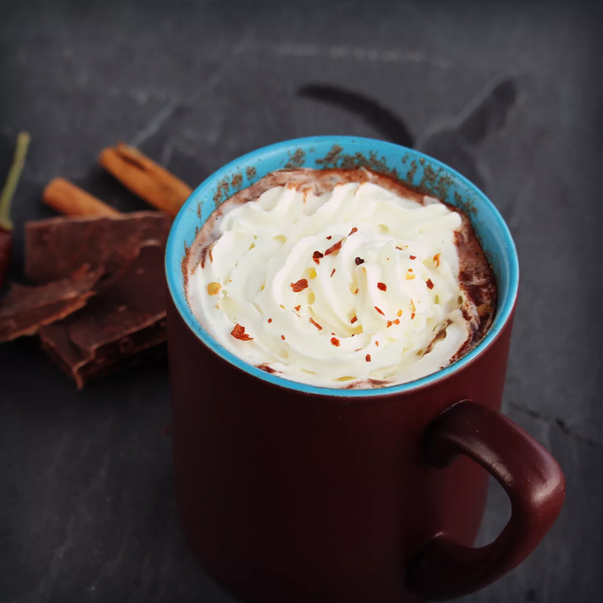

Authentic Mexican Hot Choclate

To make this authentic Mexican hot chocolate, you need Mexican hot chocolate tablets or squares which gives
it its unique taste. Eat the chile only if you can handle it!
Ingredients
- 1 cup whole milk
- 1/2 Mexican hot chocolate drink tablet (such as Nestle Abuelita)
- 1 dried red chile de arbol, lightly toasted
Directions
- Place Milk and Chocolate in a small saucepan over medium-low heat
and simmmer, stirring, until chocolate is melted but not boiling, about 5 minutes
- Pour chocolate mixture into a blender. Cover and hold lid down with a potholder; blend until foamy.
Pour into a mug. Break the chile into 2 or 3 pieces, discarding seeds, and drop into the hot chocolate. Drink
immediately.
Cook's Note:
To get the authentic taste, you need to use Mexican chocolate, which contains sugar and cinnamon. It gives
the hot chocolate its specific taste. I prefer to use 4 little of Rey Margo(R) chocolate, but it's not as easy to find here. You can also use 1/2 tablet Abuelita(R) chocolate per serving